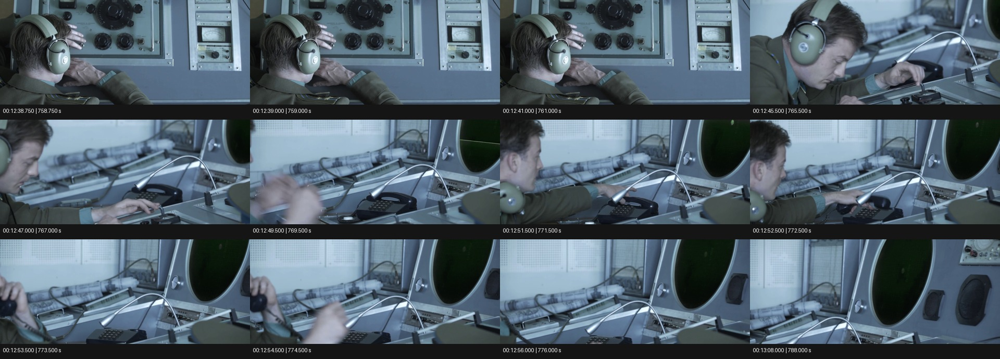
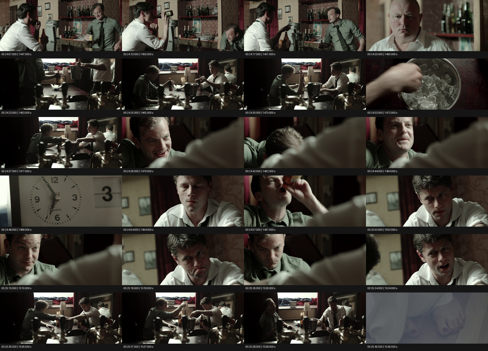
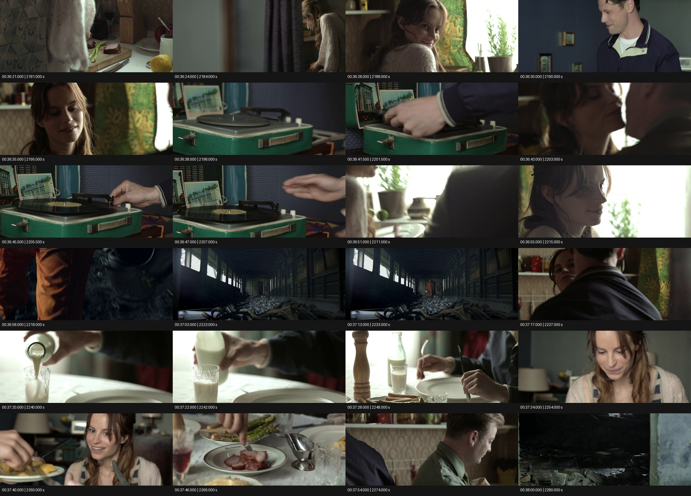
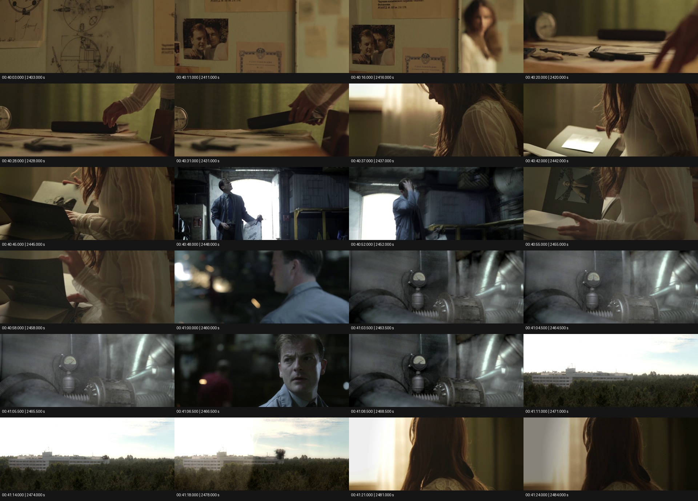
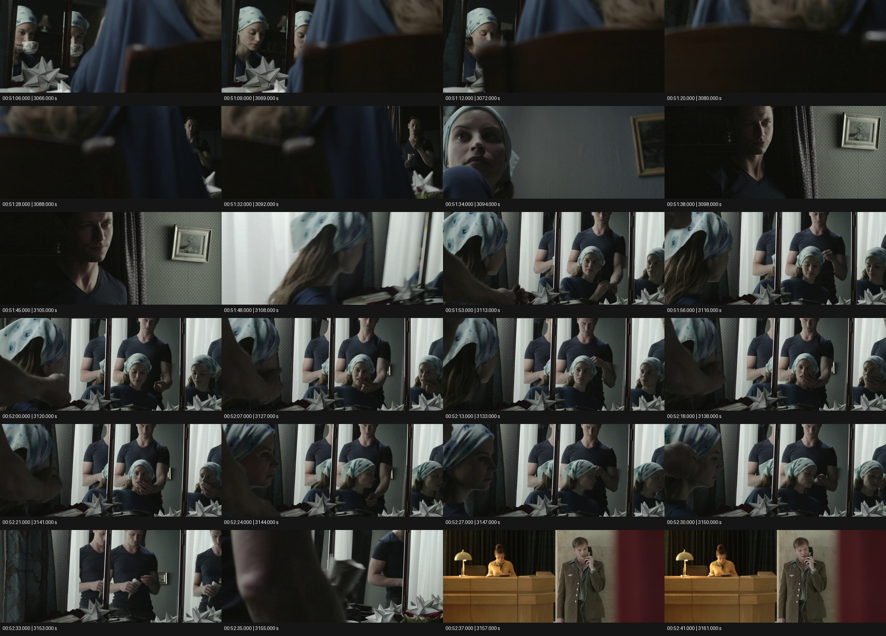
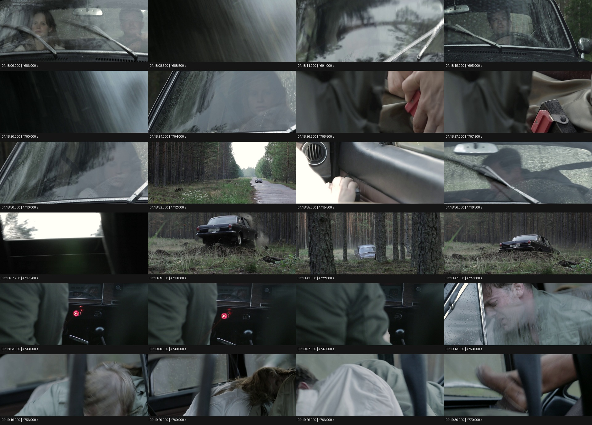

长片检索与 Omni Caption
无时间码检索 · 六段详尽视听描述
正式分数待人工核准真值
一、任务定义
给定约102分钟完整电影和六项不含时间码的场景委托，自行检索片段，再按时间推进写详尽音视频描述。重点是可见事件、真实声音，以及它们与动作、状态和切镜的对应关系。
输入
《The Cosmonaut》（2013）完整英语主音轨电影，6107.776秒，包含原始片尾。只给原片、任务说明和委托／问题，不提供作者标注、正确转写或定位索引。
交付与验收
captions.json、可阅读报告、原片区间和可回看证据。无需逐字转写对白或猜测物理声源。
允许自主联网、下载通用模型、抽帧和读取音频；无工具次数、帧数、音频或执行时长预算。
展开全部六项无时间码委托
- CAP01控制室电话：找到一名男子在控制室操作台旁拿起有线电话听筒的场景。描述这次接听前后完整的局部动作过程及周边环境。
- CAP02酒吧中的冰块挑战：找到酒吧中几个人围桌进行冰块挑战的连续一段。描述挑战从准备、开始到人物反应的过程；若出现切镜也要保持顺序。
- CAP03唱片与居室蒙太奇：找到居室中操作唱片播放设备，并与室内生活镜头衔接的那一段。描述设备操作前后及紧接的镜头变化。
- CAP04厂房与查阅旧物的交叉剪辑：找到男子在工业厂房内活动、穿插女子查阅旧物以及管道压力表特写的交叉剪辑段落。描述两条画面线索如何推进，直到远处建筑状态变化及女子随后反应。
- CAP05镜子、头巾与纸饰：找到女子在室内镜子附近整理头巾、画面能看到悬挂纸饰的段落。描述这段室内活动及随后变化。
- CAP06林间行车与突变：找到汽车在树林间行驶、车内出现腰侧搭扣操作特写，随后发生突然变故的段落。描述从车内准备、行驶到变故后紧接着的车内画面。
评分标准与真值状态
先以 Qwen3.8-Omni-Flash 分别观察画面、音频与完整音画，再分解视觉、音频、音画关系三类原子事件。152项作者候选中，运行前冻结88项诊断池（35视觉、31音频、22音画关系），本页沿用该池和裁判原票，不采用组织者回查改分。每段按事件数计算覆盖，再对六段等权平均；类别与对白／音乐／音效覆盖另报。
gpt-6.1-terra high负责语义评分。遵照本轮口径，按裁判原票展示，不采用组织者回查改分。候选事件和人类真值不同：尚未完成人工确认，不发布正式单一分数；疑点保留区间。API失败不计模型零分。
区间端点仅表示待核对项全未命中／全命中，不是统计置信区间。裁判原票与冻结题目保留不变。
以下展示节选用于回看交付；正式测试输入始终是完整电影。
二、运行结果
| 被测模型 | 实际 effort | 真实耗时 | 裁判原始区间 | 状态 |
|---|---|---|---|---|
| gpt-6.1-sol | xhigh | 58:38.9 | 74.6–79.0 | exit 0 · 有效交付 |
运行于2026-11-11；Sol/NJU Link，真实Codex CLI，Windows正常联网。Sol自行采用ASR、AST与本地Qwen2.5-Omni-3B等通用工具；没有预配Qwen3.8求解接口。
被测系统只运行 1 次，同一交付由 gpt-6.1-terra high 按冻结标准初评两次。裁判原始区间为 74.3–80.9、75.0–77.1，均值 74.6–79.0。这不是两次求解的平均分。本页按裁判原始判定展示，未采用组织者回查调整。
裁判待定事件暂按未命中表达区间下界，不能当作已确认漏答。
裁判待定事件暂按未命中表达区间下界，不能当作已确认漏答。
裁判待定事件暂按未命中表达区间下界，不能当作已确认漏答。
| 委托 | 检索范围 | 细段数 | 两次裁判区间均值 | 第1／2次待定数 |
|---|---|---|---|---|
| CAP01 控制室电话 | 12:38.7–13:09.0 | 6 | 36.4–59.1 | 4 / 1 |
| CAP02 酒吧中的冰块挑战 | 24:06.5–25:41.5 | 10 | 64.3–67.9 | 1 / 1 |
| CAP03 唱片与居室蒙太奇 | 36:20.6–38:02.0 | 10 | 66.7–66.7 | 0 / 0 |
| CAP04 厂房与查阅旧物的交叉剪辑 | 40:03.0–41:25.0 | 10 | 92.9–92.9 | 0 / 0 |
| CAP05 镜子、头巾与纸饰 | 51:05.5–52:42.0 | 9 | 87.5–87.5 | 0 / 0 |
| CAP06 林间行车与突变 | 78:05.8–79:33.5 | 10 | 100.0–100.0 | 0 / 0 |
另拆解候选描述为217条去重事实进行原片核对。该真实性审计独立报告，不混入覆盖分；机器反驳项仍需人工确认，未公布正式幻觉率。事实检查记录
实际交付
下面按原片时钟回看模型交付。文本保持模型原意，HTML为展示渲染。
CAP01 · 控制室电话 · 12:38.7–13:09.0
实际选取区间的原片节选
原片 12:38.7 · 范围 12:38.7–13:09.0 · 下载原声节选
冷蓝色控制室内，一名短发、穿橄榄绿色衬衫和领带的男子戴着浅绿色大耳机，坐在操作台前。他靠着椅背，一只手横在额头附近，另一只手靠着下颌，面朝装有大旋钮、小旋钮和指针表的灰蓝色仪器板。低而绵长、带高音弦乐感的配乐铺在背景，间有短促的电子提示音与细小喀声，先于他随后俯身操作的动作。 镜头切到男子侧前方和倾斜操作台。他低头靠近面板，伸手拨弄面前的小型控制件，身体从原先后靠转为前倾；台上有按键、拨杆、两根弯曲的金属灯臂，后方放着卷起的图纸。轻小的机械点击与他的手部动作相伴，弦乐仍在。右边是圆形绿色显示屏，屏内有横向亮线，周围另有扬声器格栅和面板。 他把耳机从两耳移下挂到颈部，短暂离开画面左缘，操作台和黑色有线按键电话留在镜头中。电话铃样的短促提示声与细碎碰触声打破较轻的背景；他随即又探身回来，把手伸向电话。 男子抓起黑色听筒，从底座上提起并举到耳边，卷曲电话线被带起；底座仍留在图纸和金属支架之间。拿取时有一下干脆的轻喀声。耳机仍在颈部，他带着听筒起身向左移出镜头，开始对电话另一端说话。 画面继续停在已经空出的操作台、电话底座和绿色圆屏上，男子的英语男声从画外延续，先叫对方的名字，再报告一个返回舱／飞行舱正在回来，并连续作简短肯定应答。人已离开画面，声音却继续，把接起听筒后的通话和这个空镜连接起来；平缓弦乐始终在对白下方。 简短应答之后话音停下，固定镜头仍对着仪器、悬伸灯臂、卷纸和电话底座；配乐与很轻的室内低底噪留下。所选片段结束于下一处建筑外景切入之前，画面中没有展示把听筒放回座机的动作。
细段与点回
- 12:38.7–12:45.4 冷蓝色控制室内，一名短发、穿橄榄绿色衬衫和领带的男子戴着浅绿色大耳机，坐在操作台前。他靠着椅背，一只手横在额头附近，另一只手靠着下颌，面朝装有大旋钮、小旋钮和指针表的灰蓝色仪器板。低而绵长、带高音弦乐感的配乐铺在背景，间有短促的电子提示音与细小喀声，先于他随后俯身操作的动作。
- 12:45.4–12:49.1 镜头切到男子侧前方和倾斜操作台。他低头靠近面板，伸手拨弄面前的小型控制件，身体从原先后靠转为前倾；台上有按键、拨杆、两根弯曲的金属灯臂，后方放着卷起的图纸。轻小的机械点击与他的手部动作相伴，弦乐仍在。右边是圆形绿色显示屏，屏内有横向亮线，周围另有扬声器格栅和面板。
- 12:49.1–12:51.4 他把耳机从两耳移下挂到颈部，短暂离开画面左缘，操作台和黑色有线按键电话留在镜头中。电话铃样的短促提示声与细碎碰触声打破较轻的背景；他随即又探身回来，把手伸向电话。
- 12:51.4–12:55.5 男子抓起黑色听筒，从底座上提起并举到耳边，卷曲电话线被带起；底座仍留在图纸和金属支架之间。拿取时有一下干脆的轻喀声。耳机仍在颈部，他带着听筒起身向左移出镜头，开始对电话另一端说话。
- 12:55.5–13:03.0 画面继续停在已经空出的操作台、电话底座和绿色圆屏上，男子的英语男声从画外延续，先叫对方的名字，再报告一个返回舱／飞行舱正在回来，并连续作简短肯定应答。人已离开画面，声音却继续，把接起听筒后的通话和这个空镜连接起来；平缓弦乐始终在对白下方。
- 13:03.0–13:09.0 简短应答之后话音停下，固定镜头仍对着仪器、悬伸灯臂、卷纸和电话底座；配乐与很轻的室内低底噪留下。所选片段结束于下一处建筑外景切入之前，画面中没有展示把听筒放回座机的动作。
模型保留疑点：对白中的人名、返回舱专名不作精确拼写；电子提示音的具体仪器来源无法仅据画面确定。男子移出画面后未见挂机，不补写挂机。

CAP02 · 酒吧中的冰块挑战 · 24:06.5–25:41.5
实际选取区间的原片节选
原片 24:06.5 · 范围 24:06.5–25:41.5 · 下载原声节选
暖暗的酒吧里，白衬衫、松领带的深色卷发男子与绿色衬衫、松领带的浅发男子各拿啤酒瓶，隔着吧台交谈。后面是花纹壁纸、成排酒瓶和红色窗帘。绿衬衫男子示意稍等，俯身到吧台下面翻找，取出一只银色金属冰桶放到台面，白衬衫男子伸手接过去；有瓶子、桶和台面相碰的轻响。 一个秃头、穿浅色衬衫的中年男子在吧台后看着他们，镜头给他严肃的侧脸，又切到靠窗的小桌。两名年轻男子隔桌坐下，冰桶被放在两人之间，桌上有啤酒瓶、纸巾、烟灰缸，窗台上有方形钟和堆着的布料，桌后镜子映出白衬衫男子的背面。椅子、桶和瓶子落位时有短促磕碰与挪动声，人声在近处继续。 白衬衫男子让对方先把手亮出来，绿衬衫男子举起张开的手掌给他看，两人一边比划一边准备把手伸向桶。临近切镜时开始说规则：谁先把手拿出来谁就输。此处以两人的近处对白和零星手、瓶子触桌的小响动为主。 切到冰桶俯拍，透明冰块密密挤在水里，一只手拨开冰块伸入，冰块互相碰撞并贴着金属桶壁发出清脆、碎裂似的喀啦声。规则的话音越过这个特写，接着白衬衫男子问输掉什么，对方把赌注说到一个女子身上，带有取笑口吻。切回双人镜头，两人各把一只手浸在桶中，手臂横伸在桌上，另一只手留在外面，互相盯着，挑战正式开始。 绿衬衫男子先咧嘴笑出声，接着笑容收紧，低头、弯颈，像是在忍住冰冷带来的不适，再抬起脸强作镇定；他的短笑、呼气和嘴里的小声音与这些表情同步。桶中偶有很轻的冰块和水的细响。 镜头突然插入窗台方钟的大特写：左边是指针钟面，右边的日期窗显示数字3。规则而清楚的滴答声在这个特写中突出起来，持续计量两人把手留在冰桶里的等待；画面随后离开钟，滴答仍继续。 切回白衬衫男子的面部，他皱眉、闭眼、抿嘴，坐着坚持；再切绿衬衫男子，他用留在桶外的手举瓶喝酒，放下后鼓腮、垂眼，重新望向对手。两人的表情近景来回交替，细小呼吸、吞咽和瓶子碰触声夹在持续滴答声中，另一只手一直没有退出挑战。 绿衬衫男子先开口，提出一项保持沉默的约定：以后两人都不要再彼此谈论那个女子，并强调永远不谈。白衬衫男子边忍耐边作答，两人简短确认成交。对白和视线来回对应，表情仍然绷紧；钟的滴答在说话的停顿里尤其明显。 两人开始仿照发射程序倒数，英语数字一声接一声，镜头在他们忍冷的脸之间切换，再回到能看到两条手臂仍伸在桶里的双人景。滴答声继续衬着倒数，临近最后几个数字，人物张嘴、皱眉和身体前倾的幅度加大。 倒数结束，两人几乎同时猛地从冰桶里抽出手，扬起、甩动并缩回身体，带出冰水搅动和碰桶的小响，随即张口发出较响的短喊、抽气与痛苦的呼气。画面约在1540秒硬切到冷色卧室里床单边的裸足、手和身体局部，前一场夸张的叫声尾音与这一切镜相接，酒吧的动作到此结束。
细段与点回
- 24:06.5–24:19.0 暖暗的酒吧里，白衬衫、松领带的深色卷发男子与绿色衬衫、松领带的浅发男子各拿啤酒瓶，隔着吧台交谈。后面是花纹壁纸、成排酒瓶和红色窗帘。绿衬衫男子示意稍等，俯身到吧台下面翻找，取出一只银色金属冰桶放到台面，白衬衫男子伸手接过去；有瓶子、桶和台面相碰的轻响。
- 24:19.0–24:25.5 一个秃头、穿浅色衬衫的中年男子在吧台后看着他们，镜头给他严肃的侧脸，又切到靠窗的小桌。两名年轻男子隔桌坐下，冰桶被放在两人之间，桌上有啤酒瓶、纸巾、烟灰缸，窗台上有方形钟和堆着的布料，桌后镜子映出白衬衫男子的背面。椅子、桶和瓶子落位时有短促磕碰与挪动声，人声在近处继续。
- 24:25.5–24:32.8 白衬衫男子让对方先把手亮出来，绿衬衫男子举起张开的手掌给他看，两人一边比划一边准备把手伸向桶。临近切镜时开始说规则：谁先把手拿出来谁就输。此处以两人的近处对白和零星手、瓶子触桌的小响动为主。
- 24:32.8–24:38.5 切到冰桶俯拍，透明冰块密密挤在水里，一只手拨开冰块伸入，冰块互相碰撞并贴着金属桶壁发出清脆、碎裂似的喀啦声。规则的话音越过这个特写，接着白衬衫男子问输掉什么，对方把赌注说到一个女子身上，带有取笑口吻。切回双人镜头，两人各把一只手浸在桶中，手臂横伸在桌上，另一只手留在外面，互相盯着，挑战正式开始。
- 24:38.5–24:45.3 绿衬衫男子先咧嘴笑出声，接着笑容收紧，低头、弯颈，像是在忍住冰冷带来的不适，再抬起脸强作镇定；他的短笑、呼气和嘴里的小声音与这些表情同步。桶中偶有很轻的冰块和水的细响。
- 24:45.3–24:54.0 镜头突然插入窗台方钟的大特写：左边是指针钟面，右边的日期窗显示数字3。规则而清楚的滴答声在这个特写中突出起来，持续计量两人把手留在冰桶里的等待；画面随后离开钟，滴答仍继续。
- 24:54.0–25:07.0 切回白衬衫男子的面部，他皱眉、闭眼、抿嘴，坐着坚持；再切绿衬衫男子，他用留在桶外的手举瓶喝酒，放下后鼓腮、垂眼，重新望向对手。两人的表情近景来回交替，细小呼吸、吞咽和瓶子碰触声夹在持续滴答声中，另一只手一直没有退出挑战。
- 25:07.0–25:21.8 绿衬衫男子先开口，提出一项保持沉默的约定：以后两人都不要再彼此谈论那个女子，并强调永远不谈。白衬衫男子边忍耐边作答，两人简短确认成交。对白和视线来回对应，表情仍然绷紧；钟的滴答在说话的停顿里尤其明显。
- 25:21.8–25:36.8 两人开始仿照发射程序倒数，英语数字一声接一声，镜头在他们忍冷的脸之间切换，再回到能看到两条手臂仍伸在桶里的双人景。滴答声继续衬着倒数，临近最后几个数字，人物张嘴、皱眉和身体前倾的幅度加大。
- 25:36.8–25:41.5 倒数结束，两人几乎同时猛地从冰桶里抽出手，扬起、甩动并缩回身体，带出冰水搅动和碰桶的小响，随即张口发出较响的短喊、抽气与痛苦的呼气。画面约在1540秒硬切到冷色卧室里床单边的裸足、手和身体局部，前一场夸张的叫声尾音与这一切镜相接，酒吧的动作到此结束。
模型保留疑点：挑战直接参与者是两名男子；秃头男子出现于准备阶段，镜中白衬衫背影不是第三名参与者。笑声、呼气和短喊部分重叠，不逐声指定由哪一人发出；未确认显著背景音乐。

CAP03 · 唱片与居室蒙太奇 · 36:20.6–38:02.0
实际选取区间的原片节选
原片 36:20.6 · 范围 36:20.6–38:02.0 · 下载原声节选
从前一条橙色航天服画面切到日光照入的小厨房：长发女子穿浅色针织外衣，站在窗边灶台和案板前切配食物，板上有肉片和细长蔬菜，旁边摆着刀、盘子和瓶罐。刀落在案板上有几下干脆敲击，锅灶处有轻微煎煮底声与餐具小碰响。她听见来人说话，回头露出笑容。 切到穿深蓝色翻领上衣的短发男子，他笑着站在门边，再切回女子。两人轻松地用英语谈到牛奶和升职，男子催她给一点祝贺、至少亲一下。她看着他抿嘴笑；近处对白和厨房细小声响相伴，窗边盆栽、花色帘子和蓝色墙面构成居室背景。 切到一台已打开箱盖的绿色便携唱机，盖内靠着建筑明信片，旁边有唱片套；金属转盘起初空着，黑色唱臂停在右边。穿深色袖子的手把一张中央为黄色标签的黑胶唱片套上轴心、放平在盘上，伴随很轻的放置、摩擦与机件小喀声。关于索要亲吻的对白越过设备特写继续。 画面先切回女子，她抬起头与凑近的男子短暂亲吻，接着再切唱机特写：手抬起右边唱臂，把唱针移到已经转动的黑胶外缘并放下，然后手离开。这个操作接在亲吻镜头之后，构成设备与人物生活动作的交替；细小机械触碰声夹在继续的说话声中。 回到厨房，女子转身继续忙碌，另一名穿绿色衬衫的男子从她身边挤过、伸手取用或摆弄台面东西。几人谈食物是否好吃、要不要帮忙、盐放得够不够及牛奶在哪里，语气亲近而带调侃。人物移动伴有衣料窸窣和锅碗、餐具的轻碰声；唱针放下后，这一段开始由带拉长人声旋律的古典／歌剧式音乐衔接下去。 画面硬切到另一处昏暗、废弃的长厂房：先是橙色裤腿和手提白色头盔的近景，低机位跟着脚步掠过满地碎屑，再切能望见一长排高窗、裸露梁柱与废料堆的大全景，穿橙色航天服的男子在远处缓缓前行。音乐中的延长歌声跨越从温暖厨房到冷暗厂房的切镜，厂房中的轻踏步、碎屑受踩的干响在歌声下方。 又切回厨房，一名男子在灶台附近俯身做事；紧接着是瓶口向透明玻璃杯倒入浅色牛奶的特写，液体流入杯中，随后杯子被放到桌上。倒液的细水声、杯底一声轻磕与画面里的倒、放动作相应，古典歌声仍在背景延续。 用餐镜头连续切换：绿衬衫男子低头用刀叉吃东西，女子微笑、垂眼再抬头，深色上衣男子也在桌边；有盘里的肉、蔬菜和食物被叉起、切分的细部。刀叉刮碰盘沿的轻脆声与手部动作对应，近处有随口的赞叹和含混交谈，背景歌声没有因换镜中断。 镜头在女子夹菜、男子伸手取瓶、餐盘中的食物以及几个人的反应之间切换。有人为杯子倒饮料，玻璃和金属餐具碰出叮当小响，谈话提到分给大家、先给别人倒一份，伴有笑意；歌唱仍被放在对白和餐桌声音后面。 深色上衣男子转回厨房，绿衬衫男子也起身在水槽、灶台附近忙碌，出现碗盘接触、餐具轻碰和一点流动、摩擦似的声响；歌声减弱，随后镜头又切向破败厂房里剥落的墙脚和地上杂物，听觉也转向空旷处的轻小干响与低底噪。片段止于下一组室内人物交谈开始前，保留了唱机启动后横跨居室生活与废墟镜头的完整衔接。
细段与点回
- 36:20.6–36:29.4 从前一条橙色航天服画面切到日光照入的小厨房：长发女子穿浅色针织外衣，站在窗边灶台和案板前切配食物，板上有肉片和细长蔬菜，旁边摆着刀、盘子和瓶罐。刀落在案板上有几下干脆敲击，锅灶处有轻微煎煮底声与餐具小碰响。她听见来人说话，回头露出笑容。
- 36:29.4–36:37.7 切到穿深蓝色翻领上衣的短发男子，他笑着站在门边，再切回女子。两人轻松地用英语谈到牛奶和升职，男子催她给一点祝贺、至少亲一下。她看着他抿嘴笑；近处对白和厨房细小声响相伴，窗边盆栽、花色帘子和蓝色墙面构成居室背景。
- 36:37.7–36:42.7 切到一台已打开箱盖的绿色便携唱机，盖内靠着建筑明信片，旁边有唱片套；金属转盘起初空着，黑色唱臂停在右边。穿深色袖子的手把一张中央为黄色标签的黑胶唱片套上轴心、放平在盘上，伴随很轻的放置、摩擦与机件小喀声。关于索要亲吻的对白越过设备特写继续。
- 36:42.7–36:47.4 画面先切回女子，她抬起头与凑近的男子短暂亲吻，接着再切唱机特写：手抬起右边唱臂，把唱针移到已经转动的黑胶外缘并放下，然后手离开。这个操作接在亲吻镜头之后，构成设备与人物生活动作的交替；细小机械触碰声夹在继续的说话声中。
- 36:47.4–36:56.6 回到厨房，女子转身继续忙碌，另一名穿绿色衬衫的男子从她身边挤过、伸手取用或摆弄台面东西。几人谈食物是否好吃、要不要帮忙、盐放得够不够及牛奶在哪里，语气亲近而带调侃。人物移动伴有衣料窸窣和锅碗、餐具的轻碰声；唱针放下后，这一段开始由带拉长人声旋律的古典／歌剧式音乐衔接下去。
- 36:56.6–37:15.5 画面硬切到另一处昏暗、废弃的长厂房：先是橙色裤腿和手提白色头盔的近景，低机位跟着脚步掠过满地碎屑，再切能望见一长排高窗、裸露梁柱与废料堆的大全景，穿橙色航天服的男子在远处缓缓前行。音乐中的延长歌声跨越从温暖厨房到冷暗厂房的切镜，厂房中的轻踏步、碎屑受踩的干响在歌声下方。
- 37:15.5–37:24.0 又切回厨房，一名男子在灶台附近俯身做事；紧接着是瓶口向透明玻璃杯倒入浅色牛奶的特写，液体流入杯中，随后杯子被放到桌上。倒液的细水声、杯底一声轻磕与画面里的倒、放动作相应，古典歌声仍在背景延续。
- 37:24.0–37:36.5 用餐镜头连续切换：绿衬衫男子低头用刀叉吃东西，女子微笑、垂眼再抬头，深色上衣男子也在桌边；有盘里的肉、蔬菜和食物被叉起、切分的细部。刀叉刮碰盘沿的轻脆声与手部动作对应，近处有随口的赞叹和含混交谈，背景歌声没有因换镜中断。
- 37:36.5–37:50.8 镜头在女子夹菜、男子伸手取瓶、餐盘中的食物以及几个人的反应之间切换。有人为杯子倒饮料，玻璃和金属餐具碰出叮当小响，谈话提到分给大家、先给别人倒一份，伴有笑意；歌唱仍被放在对白和餐桌声音后面。
- 37:50.8–38:02.0 深色上衣男子转回厨房，绿衬衫男子也起身在水槽、灶台附近忙碌，出现碗盘接触、餐具轻碰和一点流动、摩擦似的声响；歌声减弱，随后镜头又切向破败厂房里剥落的墙脚和地上杂物，听觉也转向空旷处的轻小干响与低底噪。片段止于下一组室内人物交谈开始前，保留了唱机启动后横跨居室生活与废墟镜头的完整衔接。
模型保留疑点：音乐可辨为古典／歌剧式人声，演唱者性别、曲名及歌词不作确定认定。它接在唱机操作后并跨越厂房镜头，符合由场内播放转作蒙太奇音乐的听觉处理，但不能把厂房中的音乐解释成该厂房内真实有唱机。个别厨房碎响的单件声源不清。

CAP04 · 厂房与查阅旧物的交叉剪辑 · 40:03.0–41:25.0
实际选取区间的原片节选
原片 40:03.0 · 范围 40:03.0–41:25.0 · 下载原声节选
暖黄色室内先给墙面特写，墙上贴着技术线图、文件和两人合影。镜头缓缓移动，穿浅色竖纹上衣的长发女子从后方经过，人物比墙上的照片虚一些。前一段带来的宽阔、低沉的轰隆／涌动声短暂盖在这些静止旧物上，随后退下，室内变得很安静；没有清晰对白。 切到桌面低角度，卷纸、绘图工具、黑色细长物件和一只小圆钟摆在上面。女子手指轻轻滑过纸面，移向黑色封面的册子，把它拿起，随后在窗边坐下、低头。轻微纸面摩擦、手指碰物和衣料移动声与取物动作靠在一起，画面维持柔和的暖光。 侧面近景中，她打开黑色相册，逐页抬起厚纸页，页面上嵌着黑白照片；镜头落在她的脸、手和翻开的照片之间。每次翻页都有短而干的沙沙、翻动和轻磕声，停下来观看时声音也留出空白，强调她安静查阅的节奏。 硬切到冷暗的工业厂房，一名穿蓝灰色衬衫和领带的男子站在敞开的高门前，后方是强烈的白色天光，室内能见管线、金属架、黄色栏杆和设备。他手里拿着一张展开的图纸，抬头查看高处，走动中用手从额前抹过头发；纸张和衣物有窸窣、轻小脚步与金属环境中的干响。下方渐起低而绵长、近似悬疑配乐的音调，间或掠过较细的尖吱声。 切回暖光中的女子，她翻到另一张照片，托起纸页看过，再把相册页合回或压下，并抬手碰近自己的脸、头发。翻页沙沙与册页落下的轻响回到前景，延续这条室内线索，低沉的持续音隐约留在下方。 切回厂房男子的侧后方近景，背景有散焦的亮点。他停下来向一侧看，表情从查看环境转为警觉。细而尖的吱声、震动般的喀啦与低机械嗡隆开始突出，声音先把注意力引向机器，随后画面才切到管道上的仪表。 管道和圆形压力表特写中，大口径金属管、法兰和软管周围有灰白雾气／蒸汽，指针明显从左侧向右上红色刻度区移动。机械震颤、嗡鸣与嘶嘶气流声逐渐变响，和指针上升、雾气增强同时推进。中间插入男子转脸望向声源方向的近景，他皱眉、警觉地盯着前方，再切回压力表。 压力表指针已靠近右侧高位，低频轰鸣与振动继续增大。紧接着硬切到树林对面的一整幢长条建筑远景；切镜后短暂停顿，再出现一下明显、厚重的爆响及滚动余声。爆响先于远景中清楚可见的黑烟上冒，画面一度仍像是安静的建筑外观，声音把刚才的机器异常与这个远景连接起来。 建筑右侧附近出现小股灰黑烟，逐渐鼓起、变深，向屋顶上方升成一团；建筑主体和前方大片树林仍在画面里，并没有拍到整幢建筑倒塌。爆响余波下降后，较远的鸟鸣和户外环境声重新浮现，形成从厂房内机械噪声到远景空间的变化。 远景的黑烟通过叠化与女子在明亮窗前的侧脸、后脑轮廓重叠，继而只留下室内女子。她停止低头查阅，转头、抬起视线朝窗外看，伴有短促吸气和随后较长的呼气／叹息。声音和反应出现在建筑变化之后，作为交叉剪辑的回应；本段停在下一幅破败室内空镜之前。
细段与点回
- 40:03.0–40:18.8 暖黄色室内先给墙面特写，墙上贴着技术线图、文件和两人合影。镜头缓缓移动，穿浅色竖纹上衣的长发女子从后方经过，人物比墙上的照片虚一些。前一段带来的宽阔、低沉的轰隆／涌动声短暂盖在这些静止旧物上，随后退下，室内变得很安静；没有清晰对白。
- 40:18.8–40:31.2 切到桌面低角度，卷纸、绘图工具、黑色细长物件和一只小圆钟摆在上面。女子手指轻轻滑过纸面，移向黑色封面的册子，把它拿起，随后在窗边坐下、低头。轻微纸面摩擦、手指碰物和衣料移动声与取物动作靠在一起，画面维持柔和的暖光。
- 40:31.2–40:47.0 侧面近景中，她打开黑色相册，逐页抬起厚纸页，页面上嵌着黑白照片；镜头落在她的脸、手和翻开的照片之间。每次翻页都有短而干的沙沙、翻动和轻磕声，停下来观看时声音也留出空白，强调她安静查阅的节奏。
- 40:47.0–40:53.4 硬切到冷暗的工业厂房，一名穿蓝灰色衬衫和领带的男子站在敞开的高门前，后方是强烈的白色天光，室内能见管线、金属架、黄色栏杆和设备。他手里拿着一张展开的图纸，抬头查看高处，走动中用手从额前抹过头发；纸张和衣物有窸窣、轻小脚步与金属环境中的干响。下方渐起低而绵长、近似悬疑配乐的音调，间或掠过较细的尖吱声。
- 40:53.4–40:59.0 切回暖光中的女子，她翻到另一张照片，托起纸页看过，再把相册页合回或压下，并抬手碰近自己的脸、头发。翻页沙沙与册页落下的轻响回到前景，延续这条室内线索，低沉的持续音隐约留在下方。
- 40:59.0–41:03.2 切回厂房男子的侧后方近景，背景有散焦的亮点。他停下来向一侧看，表情从查看环境转为警觉。细而尖的吱声、震动般的喀啦与低机械嗡隆开始突出，声音先把注意力引向机器，随后画面才切到管道上的仪表。
- 41:03.2–41:07.8 管道和圆形压力表特写中，大口径金属管、法兰和软管周围有灰白雾气／蒸汽，指针明显从左侧向右上红色刻度区移动。机械震颤、嗡鸣与嘶嘶气流声逐渐变响，和指针上升、雾气增强同时推进。中间插入男子转脸望向声源方向的近景，他皱眉、警觉地盯着前方，再切回压力表。
- 41:07.8–41:14.0 压力表指针已靠近右侧高位，低频轰鸣与振动继续增大。紧接着硬切到树林对面的一整幢长条建筑远景；切镜后短暂停顿，再出现一下明显、厚重的爆响及滚动余声。爆响先于远景中清楚可见的黑烟上冒，画面一度仍像是安静的建筑外观，声音把刚才的机器异常与这个远景连接起来。
- 41:14.0–41:18.4 建筑右侧附近出现小股灰黑烟，逐渐鼓起、变深，向屋顶上方升成一团；建筑主体和前方大片树林仍在画面里，并没有拍到整幢建筑倒塌。爆响余波下降后，较远的鸟鸣和户外环境声重新浮现，形成从厂房内机械噪声到远景空间的变化。
- 41:18.4–41:25.0 远景的黑烟通过叠化与女子在明亮窗前的侧脸、后脑轮廓重叠，继而只留下室内女子。她停止低头查阅，转头、抬起视线朝窗外看，伴有短促吸气和随后较长的呼气／叹息。声音和反应出现在建筑变化之后，作为交叉剪辑的回应；本段停在下一幅破败室内空镜之前。
模型保留疑点：压力表刻度的具体数值和设备用途不确定；低沉持续音中配乐与设备声的边界不完全清楚。厂房男子的动作与建筑冒烟被剪辑相连，但没有足够画面证据证明他实施了某种破坏。爆响与烟的时间先后按音轨和逐帧画面对照描述，不推断现实传播距离或事故机制。

CAP05 · 镜子、头巾与纸饰 · 51:05.5–52:42.0
实际选取区间的原片节选
原片 51:05.5 · 范围 51:05.5–52:42.0 · 下载原声节选
画面从冷色空厂房切进较暗的居室。长发女子穿深蓝色上衣、包着浅蓝底小花纹头巾，坐在三面梳妆镜前，镜面重复映出她的脸和头巾；近处椅背与她的肩背遮住部分台面。白色立体多角纸星摆在镜脚、纸张和小物件之间。她举起花纹茶杯抿一口，再放低杯子、低下眼睛；杯子有轻小接触声，前一镜的低轰余音很快消退。 镜头缓慢横移，椅背一度挡住女子大半张脸，画面逐渐在右侧镜面里显出门边一名穿深蓝短袖的男子。他拿着小容器或包着的小东西，低头动手、把东西送向嘴边。安静室内有断续的细碎沙沙、窸窣、干脆轻喀声，部分动作被椅背和身体挡住，不能把这些响动一概归给纸星或头巾。 女子突然抬眼、转头看向身后，切到她较低角度的近景；她开口说对方吓到自己，问他已经站了多久。转头、目光上抬和带惊讶的近处女声同步，先前的安静被这句对白打破。 反打门边男子的脸，他回答没有多久。女子抱怨他本可以敲门，男子说给她带了浆果，接着手和身体向室内移动。对白短促、停顿较多，动作间有轻小踏步、容器／包裹的窸窣和衣料声，没有突出的音乐旋律。 回到三面镜子的构图：女子仍坐着，男子站到她身后，镜面同时显示两人的正面和侧面。她用手在头巾边缘、耳旁和头发附近整理、触碰，抬眼看镜中男子；他一手拿着浆果，另一手把小东西递到她嘴边。细小摩擦、手指取物的轻喀与嘴边含取、咀嚼似的小声音，和这些很近的动作交替出现。白色纸星在前景保持可见。 男子又把一颗浆果送到女子唇边，她张嘴含下，嘴唇与下颌轻动，仍从镜中看他。他时而抬手轻碰头巾、发侧，时而把手停在她下巴和嘴边，两人几乎不说话。近距离细碎咀嚼、衣料／包装摩擦和零星干脆小响比背景更突出；多面镜中的重复是同一对人物的反射。 画外电话开始分组响铃，尖亮的老式铃声在很静的房间里显得突出。女子眼神和头部转向一旁，男子暂停嘴边的动作、把手收回；铃声间歇再响，她抬手摸近头巾侧边，身体转开，开始离开座位。电话不在这一镜的画面里，能确认的是铃声打断了两人的静默活动。 女子起身从镜前移走，镜中只剩男子拿着小容器和浆果站在梳妆台后。他目送她、低头动手，随后弯身离开镜面的主要区域。衣料摩擦、脚步和轻小物件声随着她起身而增加，铃声的后一组与这段移动相接。纸星仍留在台面，没有看到它们被拿走。 硬切到另一处暖色公共室内：穿橄榄绿色制服外套的男子站在红色立柱旁拿着有线电话，后方长木柜台边一名穿黄色上衣的女子低头工作，柜台有台灯。男子的英语电话声接上来，先表明是自己，询问对方是否知道一名朋友在哪里，再作简短回应。画外铃声后的这一切镜把室内片段带入新的电话场面，不能把两处空间误写成同一幅镜前构图。
细段与点回
- 51:05.5–51:13.5 画面从冷色空厂房切进较暗的居室。长发女子穿深蓝色上衣、包着浅蓝底小花纹头巾，坐在三面梳妆镜前，镜面重复映出她的脸和头巾；近处椅背与她的肩背遮住部分台面。白色立体多角纸星摆在镜脚、纸张和小物件之间。她举起花纹茶杯抿一口，再放低杯子、低下眼睛；杯子有轻小接触声，前一镜的低轰余音很快消退。
- 51:13.5–51:33.4 镜头缓慢横移，椅背一度挡住女子大半张脸，画面逐渐在右侧镜面里显出门边一名穿深蓝短袖的男子。他拿着小容器或包着的小东西，低头动手、把东西送向嘴边。安静室内有断续的细碎沙沙、窸窣、干脆轻喀声，部分动作被椅背和身体挡住，不能把这些响动一概归给纸星或头巾。
- 51:33.4–51:38.0 女子突然抬眼、转头看向身后，切到她较低角度的近景；她开口说对方吓到自己，问他已经站了多久。转头、目光上抬和带惊讶的近处女声同步，先前的安静被这句对白打破。
- 51:38.0–51:48.2 反打门边男子的脸，他回答没有多久。女子抱怨他本可以敲门，男子说给她带了浆果，接着手和身体向室内移动。对白短促、停顿较多，动作间有轻小踏步、容器／包裹的窸窣和衣料声，没有突出的音乐旋律。
- 51:48.2–52:05.4 回到三面镜子的构图：女子仍坐着，男子站到她身后，镜面同时显示两人的正面和侧面。她用手在头巾边缘、耳旁和头发附近整理、触碰，抬眼看镜中男子；他一手拿着浆果，另一手把小东西递到她嘴边。细小摩擦、手指取物的轻喀与嘴边含取、咀嚼似的小声音，和这些很近的动作交替出现。白色纸星在前景保持可见。
- 52:05.4–52:19.8 男子又把一颗浆果送到女子唇边，她张嘴含下，嘴唇与下颌轻动，仍从镜中看他。他时而抬手轻碰头巾、发侧，时而把手停在她下巴和嘴边，两人几乎不说话。近距离细碎咀嚼、衣料／包装摩擦和零星干脆小响比背景更突出；多面镜中的重复是同一对人物的反射。
- 52:19.8–52:29.8 画外电话开始分组响铃，尖亮的老式铃声在很静的房间里显得突出。女子眼神和头部转向一旁，男子暂停嘴边的动作、把手收回；铃声间歇再响，她抬手摸近头巾侧边，身体转开，开始离开座位。电话不在这一镜的画面里，能确认的是铃声打断了两人的静默活动。
- 52:29.8–52:36.2 女子起身从镜前移走，镜中只剩男子拿着小容器和浆果站在梳妆台后。他目送她、低头动手，随后弯身离开镜面的主要区域。衣料摩擦、脚步和轻小物件声随着她起身而增加，铃声的后一组与这段移动相接。纸星仍留在台面，没有看到它们被拿走。
- 52:36.2–52:42.0 硬切到另一处暖色公共室内：穿橄榄绿色制服外套的男子站在红色立柱旁拿着有线电话，后方长木柜台边一名穿黄色上衣的女子低头工作，柜台有台灯。男子的英语电话声接上来，先表明是自己，询问对方是否知道一名朋友在哪里，再作简短回应。画外铃声后的这一切镜把室内片段带入新的电话场面，不能把两处空间误写成同一幅镜前构图。
模型保留疑点：委托所说的纸饰可明确核验为镜脚、台面上的白色立体纸星；未确认它们悬挂。几处细小干响可能含包装、取食和台面物件声，画面有遮挡，不认作剪刀声或强行归给纸饰。电话在镜前场景中属于画外声。

CAP06 · 林间行车与突变 · 78:05.8–79:33.5
实际选取区间的原片节选
原片 78:05.8 · 范围 78:05.8–79:33.5 · 下载原声节选
从橙色航天服男子在沙发上的画面硬切到一辆行驶中的深色老式轿车，镜头隔着挂满雨水的挡风玻璃看车内：穿绿色夹克的浅发男子握着方向盘，长发、穿浅色上衣的女子坐在旁边，神情安静而紧绷。雨刷来回扫过两人的脸前，留下短暂清晰的弧形水迹；连续的行车低隆、雨水沙沙和有规律的刷擦声与这一动作对应。 车身、挡风玻璃和车内两人的局部反复切换，林木的倒影从玻璃上流过，另有快速掠过、拉成斜线的树干镜头，表现车在林间直路上前进。男子一直看前方，女子视线落向前方或身旁；环境以轮胎、发动机似的低噪及雨刷摩擦为主，没有清楚持续的对白或明显配乐。 突切到女子腰侧／座椅边的近距离特写：手指抓住安全带搭扣上的红色部分，扳动、按开并松脱带子，手随即离开，红黑搭扣留在衣料旁。一个短促干脆的咔哒小响夹在原来的行车声里，与搭扣操作对应；这个准备动作发生在汽车已行驶之后。 再回到雨刷掠过女子面前的车窗近景，然后切树林夹着的笔直公路远景，轿车从远处驶近。镜头距离拉远时，原来贴近车厢的低隆和刷擦声也变得疏远；静止的道路构图与先前飞掠的树干形成节奏变化。 快速切回车内，女子的手伸向车门内侧拉手并扳动，随即是男子突然转头、身体急动和方向盘的近景；一声短促而急的男声喊叫与这一突变贴合。车门／机件发出较硬的喀、砰声，行驶的平稳声底被骤然加大的冲撞声打断。 外景中，轿车突然离开公路，冲上长草和起伏地面，在树干之间剧烈颠簸，扬起灰尘／水雾，镜头从近处车尾与远处树林间的车身快速交替。连续几下沉重的撞击、震动与刮擦声跟着车身跳动和陷入草地的动作，随后迅速衰减。所见是驶离道路并停在林地里，没有清楚展示翻车。 轿车歪停在树间，车尾朝向镜头，周围的尘雾慢慢散开。刚才的大响过后，声场突然很空，出现规则、细而清楚的哒、哒／咔哒声，几乎取代了行驶时的连续噪声。镜头先让这个停住的外景维持片刻，车里暂时没有清晰说话。 切进车内仪表台与前排之间，前景被男子绿色上身挡住一部分，能见方向盘下方的面板、排挡杆和一枚间歇明灭的圆形红灯。规律滴答声在这个长近景中继续，与反复闪烁的红灯同在；人物身体起初几乎不动，随后肩背略动，响起一阵粗重清喉／咳声和吸气。声音先使人察觉他恢复动作，画面才转向他较明显的挣扎。 从挂着水珠的侧窗外看，男子低垂着头，随后抬头、用力挪动，打开车门，身体往外挤，脸上有明显痛苦的挤皱表情。开门和身体撞碰门框时有喀、砰与吱动声，伴随粗重呼吸、低哼和短促呼唤；镜头切到女子，她头和上身向前歪着，长发遮住部分面孔，没有明显主动反应。 男子从车外绕近、弯腰探回女子这一侧，手伸向她的肩背，把她抱住、托起；近景中他的脸贴近她衣肩，接着她的浅色衣料和头发从车门口掠过，脚与门边也短暂入镜。急促喘气、用力的哼声、布料窸窣和车门／车身轻碰伴着搬抱动作；约4771秒切到车外树林，他已抱着她离开座位。片段至此结束，保留了突变后车厢里的停顿、闪灯、男子醒动和抱扶过程。
细段与点回
- 78:05.8–78:13.5 从橙色航天服男子在沙发上的画面硬切到一辆行驶中的深色老式轿车，镜头隔着挂满雨水的挡风玻璃看车内：穿绿色夹克的浅发男子握着方向盘，长发、穿浅色上衣的女子坐在旁边，神情安静而紧绷。雨刷来回扫过两人的脸前，留下短暂清晰的弧形水迹；连续的行车低隆、雨水沙沙和有规律的刷擦声与这一动作对应。
- 78:13.5–78:25.9 车身、挡风玻璃和车内两人的局部反复切换，林木的倒影从玻璃上流过，另有快速掠过、拉成斜线的树干镜头，表现车在林间直路上前进。男子一直看前方，女子视线落向前方或身旁；环境以轮胎、发动机似的低噪及雨刷摩擦为主，没有清楚持续的对白或明显配乐。
- 78:25.9–78:27.4 突切到女子腰侧／座椅边的近距离特写：手指抓住安全带搭扣上的红色部分，扳动、按开并松脱带子，手随即离开，红黑搭扣留在衣料旁。一个短促干脆的咔哒小响夹在原来的行车声里，与搭扣操作对应；这个准备动作发生在汽车已行驶之后。
- 78:27.4–78:34.7 再回到雨刷掠过女子面前的车窗近景，然后切树林夹着的笔直公路远景，轿车从远处驶近。镜头距离拉远时，原来贴近车厢的低隆和刷擦声也变得疏远；静止的道路构图与先前飞掠的树干形成节奏变化。
- 78:34.7–78:37.1 快速切回车内，女子的手伸向车门内侧拉手并扳动，随即是男子突然转头、身体急动和方向盘的近景；一声短促而急的男声喊叫与这一突变贴合。车门／机件发出较硬的喀、砰声，行驶的平稳声底被骤然加大的冲撞声打断。
- 78:37.1–78:42.7 外景中，轿车突然离开公路，冲上长草和起伏地面，在树干之间剧烈颠簸，扬起灰尘／水雾，镜头从近处车尾与远处树林间的车身快速交替。连续几下沉重的撞击、震动与刮擦声跟着车身跳动和陷入草地的动作，随后迅速衰减。所见是驶离道路并停在林地里，没有清楚展示翻车。
- 78:42.7–78:50.9 轿车歪停在树间，车尾朝向镜头，周围的尘雾慢慢散开。刚才的大响过后，声场突然很空，出现规则、细而清楚的哒、哒／咔哒声，几乎取代了行驶时的连续噪声。镜头先让这个停住的外景维持片刻，车里暂时没有清晰说话。
- 78:50.9–79:07.7 切进车内仪表台与前排之间，前景被男子绿色上身挡住一部分，能见方向盘下方的面板、排挡杆和一枚间歇明灭的圆形红灯。规律滴答声在这个长近景中继续，与反复闪烁的红灯同在；人物身体起初几乎不动，随后肩背略动，响起一阵粗重清喉／咳声和吸气。声音先使人察觉他恢复动作，画面才转向他较明显的挣扎。
- 79:07.7–79:20.8 从挂着水珠的侧窗外看，男子低垂着头，随后抬头、用力挪动，打开车门，身体往外挤，脸上有明显痛苦的挤皱表情。开门和身体撞碰门框时有喀、砰与吱动声，伴随粗重呼吸、低哼和短促呼唤；镜头切到女子，她头和上身向前歪着，长发遮住部分面孔，没有明显主动反应。
- 79:20.8–79:33.5 男子从车外绕近、弯腰探回女子这一侧，手伸向她的肩背，把她抱住、托起；近景中他的脸贴近她衣肩，接着她的浅色衣料和头发从车门口掠过，脚与门边也短暂入镜。急促喘气、用力的哼声、布料窸窣和车门／车身轻碰伴着搬抱动作；约4771秒切到车外树林，他已抱着她离开座位。片段至此结束，保留了突变后车厢里的停顿、闪灯、男子醒动和抱扶过程。
模型保留疑点：开场已在行车，未找到本段内上车或启动汽车的准备镜头；保留搭扣操作作为车内准备动作。规律滴答与闪灯相伴，具体继电器或警示装置型号不确定。车门操作、急动和驶离道路按画面先后描述，不推断女子意图或事故原因；不凭女子无反应断定死亡。

三、运行轨迹
先粗索引定位，再查声音与画面，最后交付并自检。轨迹页面默认显示过程总结，可切换关键步骤和全部公开记录。
四、失败分析
按裁判原票，六个场景均定位正确，音画关系覆盖弱于视觉和音频单模态覆盖。裁判认为候选多处只分别描述画面与声音，没有明确绑定；其具体扣分包括电话操作提示音、冰桶准备声与道歉内容，以及部分跨镜头声音关系。逐事件判票保留候选引句与理由，可直接下载核查。
两次裁判在8个事件上存在分歧，包括控制台操作、屏幕镜头、吧台人物镜头、器皿轻碰和铃声关系。裁判未决项保留null，不由组织者自行看全片替其定票。第1次判票 · 第2次判票
工具并非只安装未使用：AST分类 #28、本地音频批处理 #90均实际执行。该本地 Qwen2.5-Omni-3B 由Agent自行选择，与作者使用的 Qwen3.8 API 不同；其输出存在重复和不可靠文本，模型继续结合画面、ASR与声学特征处理。当前运行衡量的是允许通用工具的 GPT Agent。
本版原始裁判区间仍高于70分，只有一次求解，也不代表稳定难度。候选真值按计划交给人工核准；当前不将裁判待定项包装成已确认错误。